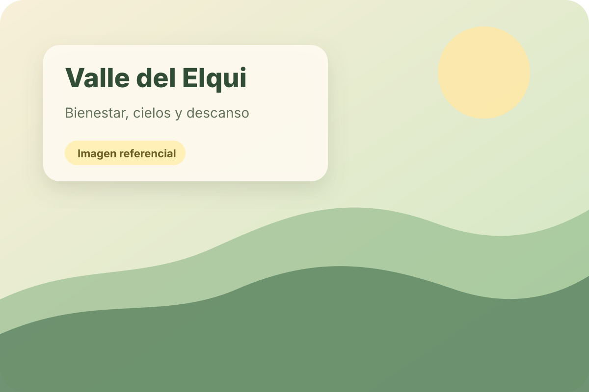

🌿
Rutas tranquilas
Itinerarios pensados para viajar con tiempo, pausas y experiencias memorables.
Una APP-web para ofrecer escapadas, viajes grupales y experiencias turísticas por distintas zonas de Chile, con valores referenciales y espacios listos para fotografías reales de viajeros.
Zonas de ejemplo
Modalidades de precio
Editable para Vercel

Diseño en tonos crema, verdes y amarillos pastel para transmitir paz, confianza y naturaleza.
Valores ficticios para prueba. Puedes cambiar precios, duración, sitios a visitar e imágenes desde los archivos del proyecto.
Itinerarios pensados para viajar con tiempo, pausas y experiencias memorables.
Tarifas referenciales para personas y grupos, listas para editar.
Ejemplos desde el norte, centro, sur, Patagonia e islas.
Espacios para reemplazar por imágenes reales de viajeros.
Sube esta carpeta a GitHub, conecta el repositorio con Vercel y edita los textos desde archivos simples.